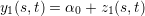
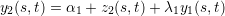
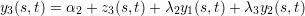
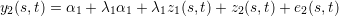
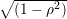
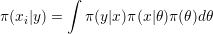

Chapter 12
Space-time coregionalization model
In this Chapter we present a way to fit the Bayesian coregionalization model proposed by
[Schimdt and Gelfand, 2003]. We consider a generalization for the space-time case. Also, the
approach implemented in R-INLA allows completelly missalignment on space and time for all the
outcomes, it only need the same space-time observation window.
WARNING: a crude mesh is used and simplifications in the fitting process are made to run
this example in a short time.
12.1 The model and parametrization
An example for the particular case of three outcomes defined as folowing



This model can be fitted in R-INLA using the copy feature. In the parametrization above it is
needed to copy the linear predictor in the first equation to the second and the linear predictor in
the second equation to the third. However, this model can be reparametrized to make the fitting
process easier. This reparametrization is to change the second and the third equation as
follows


We have then two new intercepts α1* = α1 + λ1α1 and α2* = α2 + (λ2 + λ3λ1)α1 + λ3α2.
We will use the copy feature to fit λ1 = β1. In the second equation and λ2 + λ3λ1 = β2 will
be the first copy parameter in the third equation. A second copy will be used in the third
equation to fit λ3 = β3.
12.2 Data simulation
Parameter setting
alpha <- c(-5, 3, 10) ### intercept on reparametrized model
m.var <- (3:5)/10 ### random field marginal variances
kappa <- c(10, 7, 5) ### GRF scales: inverse range parameters
beta <- c(.7, .5, -.5) ### copy par.: reparam. coregionalization par.
rho <- c(.7, .8, .9) ### temporal correlations
n <- 50; k <- 15 ### number of spatial locations and time points
It is not required to the spatial locations to be the same for each process to fit this model in
R-INLA, as shown in the Chapter 7. It is also not required for the time points to be the same, as
we can define the model on a set of time knots, see Chapter 11. However, to simplify the
code, we just use the same spatial locations and the same time points for all three
processes.
loc <- cbind(runif(n), runif(n))
We can use the rspde() function defined in the section 2.5 to simulate independent
random field realizations for each time. This function is available in the file at
http://www.math.ntnu.no/inla/r-_inla.org/tutorials/spde/spde-_tutorial-_functions.R
x1 <- rspde(loc, kappa[1], m.var[1], n=k, seed=1)
x2 <- rspde(loc, kappa[2], m.var[2], n=k, seed=2) x3 <- rspde(loc, kappa[3], m.var[3], n=k, seed=3)
The time evolution will follows an autoregressive first order process as we used in
Chapter 10.
z1 <- x1; z2 <- x2; z3 <- x3 for (j in 2:k) {
z1[, j] <- rho[1] * z1[,j-1] + sqrt(1-rho[1]^2) * x1[,j]
z2[, j] <- rho[2] * z2[,j-1] + sqrt(1-rho[2]^2) * x2[,j]
z3[, j] <- rho[3] * z3[,j-1] + sqrt(1-rho[3]^2) * x3[,j] }
The term  is because we are sampling from the stationary distribution, and is
in accord to the first order autoregressive process parametrization implemented in
R-INLA.
Then we define the observation samples
y1 <- alpha[1] + z1 y2 <- alpha[2] + beta[1] * z1 + z2
y3 <- alpha[3] + beta[2] * z1 + beta[3] * z2 + z3
12.3 Model fitting
Build the mesh to use in the fitting process (this is a crude mesh used here for short
computational time pourpose)
mesh <- inla.mesh.2d(loc, max.edge=0.3, offset=0.2, cutoff=0.15)
Define the object that includes the SPDE stuff
spde <- inla.spde2.matern(mesh)
Defining all the index set for the space-time fields and the for the copies. As we have the
same mesh, they are the same.
s1 = s2 = s3 = s12 = s13 = s23 = rep(1:spde$n.spde, times=k)
g1 = g2 = g3 = g12 = g13 = g23 = rep(1:k, each=spde$n.spde)
Prior for ρj is chosen as the Penalized Complexity prior, [Simspon et al., 2015]
rho1p <- list(theta=list(prior='pccor1', param=c(0, 0.9)))
ctr.g <- list(model='ar1', hyper=rho1p)
Ther prior chosen above consider P(ρ > 0) = 0.9.
Priors for each of the the copy parameters N(0,10)
hc3 <- hc2 <- hc1 <- list(theta=list(prior='normal', param=c(0,10)))
The priors for the fields are the default ones, described in [Lindgren and Rue,
2013].
Define the formula including all the terms in the model.
form <- y ~ 0 + intercept1 + intercept2 + intercept3 +
f(s1, model=spde, ngroup=k, group=g1, control.group=ctr.g) +
f(s2, model=spde, ngroup=k, group=g2, control.group=ctr.g) +
f(s3, model=spde, ngroup=k, group=g3, control.group=ctr.g) +
f(s12, copy="s1", group=g12, fixed=FALSE, hyper=hc1) +
f(s13, copy="s1", group=g13, fixed=FALSE, hyper=hc2) +
f(s23, copy="s2", group=g23, fixed=FALSE, hyper=hc3)
Define the projector matrix (all they are equal in this example, but it can be
different)
stloc <- kronecker(matrix(1,k,1), loc) ### rep. coordinates each time
A <- inla.spde.make.A(mesh, stloc, n.group=k, group=rep(1:k, each=n))
Organize the data in three data stack and join it
stack1 <- inla.stack( data=list(y=cbind(as.vector(y1), NA, NA)), A=list(A),
effects=list(list(intercept1=1, s1=s1, g1=g1))) stack2 <- inla.stack(
data=list(y=cbind(NA, as.vector(y2), NA)), A=list(A),
effects=list(list(intercept2=1, s2=s2, g2=g2, s12=s12, g12=g12)))
stack3 <- inla.stack( data=list(y=cbind(NA, NA, as.vector(y3))), A=list(A),
effects=list(list(intercept3=1, s3=s3, g3=g3,
s13=s13, g13=g13, s23=s23, g23=g23)))
stack <- inla.stack(stack1, stack2, stack3)
We consider that there is no nugget effect in all the three outcomes. So the likelihood
precision parameter for each likelihood are set fixed as a high value:
hfix <- list(hyper=list(theta=list(initial=5, fixed=TRUE)))
Precision equals to exp(5) is not so high in this case and we chose this value to add some ’flexibility’
to help the fitting process.
We have 12 hyperparameters in the model. To make the optimization process fast, we use the
parameter values used in the simulation as the initial values
theta.ini <- c(-log(4*pi*m.var*kappa^2)/2,
log(kappa), binomial()$linkfun(rho), beta
)[c(1,4, 7, 2,5, 8, 3,6, 9, 10:12)]
With 12 hyperparameters the CCD strategy uses 281 integration points to compute
 We
avoid it using the Empirical Bayes strategy approaching such marginals using only the modal
configuration of θ.
(result <- inla(form, rep('gaussian', 3), data=inla.stack.data(stack),
control.family=list(hfix, hfix, hfix),
control.mode=list(theta=theta.ini, restart=TRUE),
control.inla=list(int.strategy='eb'),##avoid integration
control.predictor=list(A=inla.stack.A(stack))))$cpu
Pre-processing Running inla Post-processing Total
0.9842436 156.0811536 0.5662756 157.6316729
result$logfile[grep('Number of function evaluations', result$logfile)]
[1] "Number of function evaluations = 935"
round(result$misc$theta.mode, 2)
[1] -3.58 2.57 1.76 -3.25 2.07 2.79 -2.67 1.51 3.86 0.65 0.58 -0.56
Summary of the posterior marginal density for the intercepts
round(cbind(true=alpha, result$summary.fix), 2)
true mean sd 0.025quant 0.5quant 0.975quant mode kld
intercept1 -5 -5.14 0.10 -5.33 -5.14 -4.95 -5.14 0
intercept2 3 2.89 0.26 2.39 2.89 3.39 2.89 0
intercept3 10 10.26 0.53 9.23 10.26 11.29 10.26 0
Summary of the posterior marginal density for the temporal correlations:
round(cbind(true=rho, result$summary.hy[c(3,6,9),]), 4)
true mean sd 0.025quant 0.5quant 0.975quant mode
GroupRho for s1 0.7 0.7114 0.0364 0.6387 0.7117 0.7812 0.7105
GroupRho for s2 0.8 0.8807 0.0255 0.8230 0.8835 0.9226 0.8890
GroupRho for s3 0.9 0.9629 0.0113 0.9390 0.9635 0.9825 0.9650
Summary of the posterior marginal density for the copy parameters:
round(cbind(true=beta, result$summary.hy[10:12,]), 4)
true mean sd 0.025quant 0.5quant 0.975quant mode
Beta for s12 0.7 0.6467 0.0484 0.5524 0.6464 0.7423 0.6456
Beta for s13 0.5 0.5847 0.0386 0.5090 0.5848 0.6605 0.5848
Beta for s23 -0.5 -0.5538 0.0363 -0.6242 -0.5542 -0.4817 -0.5553
Computing the random field parameters for each field
rf1 <- inla.spde2.result(result, 's1', spde, do.transf=TRUE)
rf2 <- inla.spde2.result(result, 's2', spde, do.transf=TRUE)
rf3 <- inla.spde2.result(result, 's3', spde, do.transf=TRUE)
The marginal variance for each random field
round(cbind(true=m.var, t(sapply(list(rf1, rf2, rf3), function(rf)
unlist(inla.zmarginal(rf$marginals.variance.nominal[[1]],
silent=TRUE))))), 3)
true mean sd quant0.025 quant0.25 quant0.5 quant0.75 quant0.975
[1,] 0.3 0.625 0.091 0.476 0.560 0.614 0.679 0.830
[2,] 0.4 0.842 0.168 0.555 0.721 0.827 0.945 1.212
[3,] 0.5 0.967 0.314 0.545 0.742 0.898 1.120 1.762
Scale parameter for each random field
round(cbind(true=kappa, t(sapply(list(rf1, rf2, rf3), function(rf)
unlist(inla.zmarginal(rf$marginals.kappa[[1]], silent=TRUE))))), 3)
true mean sd quant0.025 quant0.25 quant0.5 quant0.75 quant0.975
[1,] 10 13.623 1.828 10.596 12.306 13.409 14.727 17.753
[2,] 7 8.068 0.802 6.652 7.497 8.006 8.575 9.799
[3,] 5 4.561 0.436 3.777 4.252 4.533 4.840 5.490
Spatial range nominal for each random field
round(cbind(true=sqrt(8)/kappa, t(sapply(list(rf1, rf2, rf3),
function(rf) unlist(inla.zmarginal(
rf$marginals.range.nom[[1]], silent=TRUE))))), 3)
true mean sd quant0.025 quant0.25 quant0.5 quant0.75 quant0.975
[1,] 0.283 0.211 0.027 0.159 0.192 0.211 0.230 0.267
[2,] 0.404 0.354 0.035 0.288 0.330 0.353 0.377 0.425
[3,] 0.566 0.626 0.060 0.515 0.584 0.624 0.665 0.748
par(mfrow=c(1,3), mar=c(2,2,0.5,0.5), mgp=c(1.5,0.5,0))
plot(drop(A%*%result$summary.ran$s1$mean), as.vector(z1),
xlab='', ylab='', asp=1); abline(0:1)
plot(drop(A%*%result$summary.ran$s2$mean), as.vector(z2),
xlab='', ylab='', asp=1); abline(0:1)
plot(drop(A%*%result$summary.ran$s3$mean), as.vector(z3),
xlab='', ylab='', asp=1); abline(0:1)
The simplifications for a fast inference may caused that the posterior mean for the marginal
variances and the scale parameters are not close to the values used to simulate the data.
However, the nominal range is not so far and the posterior marginals cover the value used for
simulation in two of the three fields. Also, we can see in Figure 12.1 that the posterior mean of
each random field at each space and time location are well correlated with the simulated
ones.